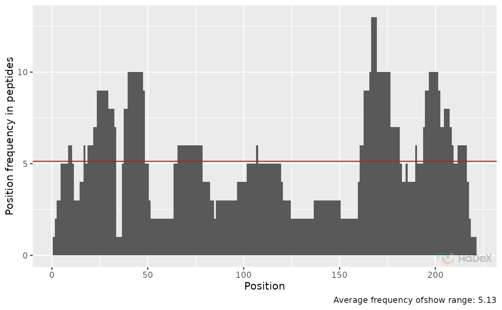

Plot overlap distribution
plot_overlap_distribution.RdGenerates overlap distribution plot based on supplied data and parameters.
Arguments
- overlap_dist_dat
produced by
create_overlap_distribution_datasetfunction- start
start start position of chosen protein.
- end
end position of chosen protein.
- interactive
logical, whether plot should have an interactive layer created with with ggiraph, which would add tooltips to the plot in an interactive display (HTML/Markdown documents or shiny app).
Details
This plot presents how many times (by how many peptides) a amino position in protein sequence is covered. This plot is visible in GUI.
Examples
overlap_dist_dat <- create_overlap_distribution_dataset(alpha_dat)
plot_overlap_distribution(overlap_dist_dat)
